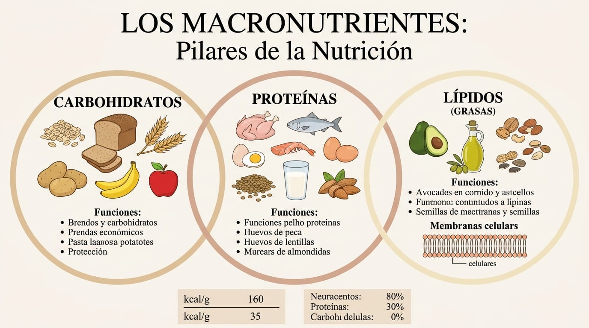

1. Los Macronutrientes Esenciales
Los macronutrientes son las sustancias que el organismo necesita en mayores cantidades para obtener energía y mantener sus estructuras celulares. Se dividen en tres grupos principales: carbohidratos, proteínas y lípidos.

Figura 1: Distribución equilibrada de grupos de alimentos.
Comprender el aporte calórico de cada grupo (4 kcal/g para carbohidratos y proteínas, y 9 kcal/g para grasas) es fundamental para el cálculo dietético.
2. Principios de Dietética Aplicada
La dietética estudia cómo combinar los alimentos de forma adecuada según las necesidades fisiológicas de cada persona, considerando factores como la edad, el nivel de actividad física y el estado de salud.
Una dieta equilibrada no solo previene deficiencias nutricionales, sino que también actúa como herramienta clave en la prevención de enfermedades crónicas.
3. Para mi la nutricion es vida
A mí Waleska Guerrero siempre me ha fascinado muchísimo todo lo que hay detrás de lo que comemos y cómo el cuerpo convierte eso en energía, salud y bienestar. Si tuviera que explicar por qué me apasiona tanto la idea de estudiar Nutrición y Dietética, lo diría desde el corazón, como una alumna que sueña con dedicarse a esto en el futuro: Para mí, estudiar nutrición no se trata solo de contar calorías o de hacer dietas restrictivas; es entender que la comida es la medicina y el combustible más poderoso que tenemos. Es fascinante descubrir cómo cada nutriente, ya sea un carbohidrato, una proteína o un lípido, cumple una misión súper específica dentro de nuestras células para que podamos movernos, pensar, crecer y sanar. Pero lo más lindo de querer ejercer esta profesión es, sin duda, el impacto real y humano que puedes tener en la vida de las otras personas. Poder transformar la relación de alguien con su alimentación, ver cómo recupera su energía, su salud o su confianza, y acompañarlo a cumplir sus metas de bienestar es algo sumamente gratificante. No se trata solo de ciencia exacta, sino de empatía, de escuchar, de educar con amor y de regalar salud y calidad de vida a través de algo tan cotidiano y hermoso como compartir y cuidar lo que comemos. ¡Es una carrera que te llena el alma!
Figura 2: Vision de uniforme y clinica.